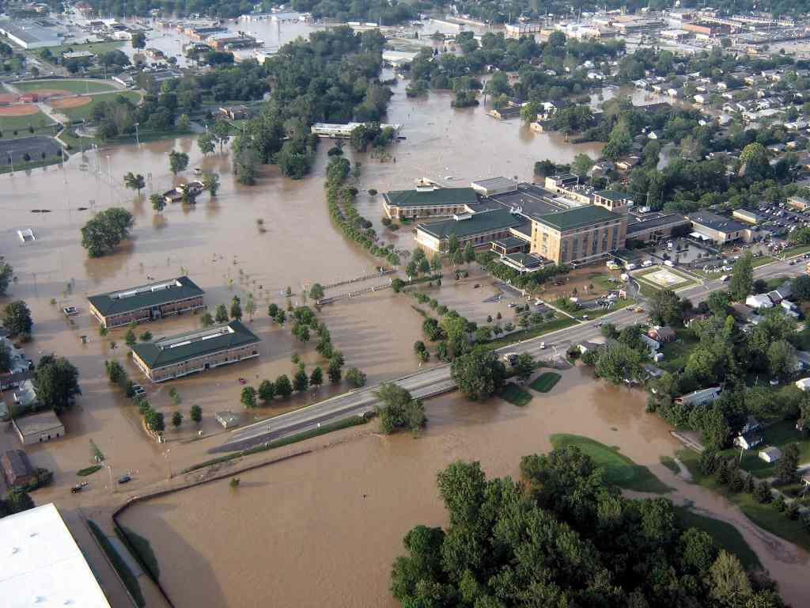
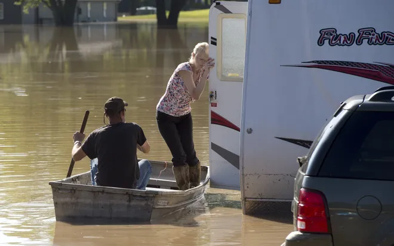

Extreme Weather
When Water, Wind, and Development Collide
Intensifying rainfall, stronger wind events, and expanding floodplains are reshaping how both the installation and surrounding communities prepare for and recover from storms. What were once routine seasonal floods now bring higher runoff, faster flows, and growing pressure on local infrastructure and training lands.
Across Johnson, Brown, and Bartholomew Counties, development has replaced forests and farmland with hard surfaces that accelerate water movement and magnify damage. As weather extremes collide with expanding urban footprints, the region faces a new reality: resilience depends on understanding how water, wind, and land use interact across boundaries. This page traces that story from historic baselines to projected future risks.
Pre-1980s: A Naturally Buffered Watershed
- Flooding was largely confined to natural river systems, primarilythe East Fork White River and Salt Creek tributaries surrounding Camp Atterbury.
- Rural farmland and forest cover dominated the watershed, allowing rainfall to infiltrate soils, recharge groundwater, and slow surface runoff.
- Natural flood buffering reduced storm impacts, with wetlands, riparian corridors, and undeveloped floodplains absorbing excess water during heavy precipitation events.
- Military training areas were rarely affected by major storms, with minimal infrastructure at risk.
- Historic flood documentation from the U.S. Geological Survey shows that even during extreme precipitation events, flood impacts were concentrated along established river corridors rather than across the broader landscape as shown in the map to the right.
1980s–2000s: Eroding the Buffer
- Storm intensity and seasonal rainfall variability increased, with more frequent high-intensity precipitation events, producing sharper runoff peaks.
- Although total annual rainfall changed modestly, shifts in storm timing and intensity placed increasing stress on local drainage networks with higher peak storm events becoming more common.
- Rapid suburban and exurban growth in Johnson and Bartholomew Counties transformed large areas of farmland and forest into residential subdivisions, commercial corridors, and transportation infrastructure, replacing permeable soils with subdivisions and paved surfaces.
- As illustrated in the map to the left, upstream development increased runoff efficiency, routing rainfall more quickly toward Camp Atterbury’s lowlands and contributing to higher average monthly discharge and flooding conflicts with training operations.
- By the late 2000s, these shifting extreme weather patterns and land-use changes were no longer abstract trends, but conditions under which extreme weather events could directly affect installation operations.
2010s–2020s: From Occasional Flooding to Recurring Disruption
- Mapped FEMA floodplain boundaries expanded along the East Fork White River, extending closer to, and in some areas directly adjacent to, Camp Atterbury’s perimeter, reflecting increased flood exposure under contemporary hydrologic conditions.
- Localized flash floodings increasingly affected training access roads and riparian zones corridors, and low-lying areas within the installation buffer area, disrupting site access and limiting the usability of flood-prone training zones during and after major storm events.
- Regional stormwater systems were increasingly tested by high-intensity rainfall and interacting with expanded impervious surface runoff, resulting in faster runoff delivery, higher peak flows, and reduced system capacity during extreme precipitation events.
2020s: Managing Extreme Weather in Real Time
- Continued suburban expansion in Franklin, Edinburgh, and Columbus has intensified regional exposure to multiple extreme weather hazards, increasing impervious surface coverage and placing greater strain on stormwater, transportation, and utility infrastructure during heavy rainfall and severe storm events.
- Camp Atterbury’s perimeter now lies at the convergence of several extreme weather stressors, including mapped floodplains, concentrated stormwater runoff pathways, and corridors exposed to high winds and storm activity.
- Frequent heavy rainfall events disrupt training schedules and limit vehicle access, particularly in low-lying roads and riparian corridors, while also amplifying flash flood risk during short-duration, high-intensity storms.
- Severe convective storms, including tornado-producing systems, introduce short-notice operational disruptions, such as high winds, debris hazards, power outages, and safety restrictions that affect both training and administrative functions.
2050 & Beyond: Intensifying Extreme Weather Risk
- Projections for southern Indiana consistently indicate wetter conditions by mid-century, with annual precipitation increases on the order of approximately 15-25% and a disproportionate rise in heavy precipitation events that intensify runoff generation and stormwater loading across the region.
- More frequent and intense storm events are expected to increase peak flows, flash flooding, and backwater effects, particularly along the East Fork White River and connected tributaries, potentially extending flood exposure into Camp Atterbury’s southern training ranges and low-lying operational areas.
- Future extreme weather risk is expected to be compounded by continued land use change, as ongoing suburban and exurban development increases impervious surface coverage and reduces landscape infiltration capacity in upstream and adjacent watersheds.
- Severe convective storms, including high wind and tornado-producing systems, are projected to remain a persistent regional hazard, sustaining short-notice risks to infrastructure, power systems, access routes, and training continuity.
Floodplain Development
Mapping 500-year flood zones and floodways alongside building footprints reveals how development has expanded into flood-prone areas across the Camp Atterbury region. Each county illustrates different challenges—from steep terrain and flash flooding in Brown County to urban expansion pressures in Johnson and Bartholomew Counties.


These maps display FEMA’s 500-year flood hazard zones (light red), approximate and DNR-approved floodways (blue tones), and local building footprints. Together, they highlight where residential and commercial development overlap flood-susceptible corridors.
- Johnson County: Rapid suburban expansion in Franklin and Greenwood overlaps with floodplains along Youngs and Hurricane Creeks.
- Brown County: Rugged terrain channels runoff into narrow valleys, increasing localized flood potential even outside FEMA zones.
- Bartholomew County: The East Fork White River floodway intersects growth zones around Columbus, emphasizing long-term mitigation needs.
Severe Wind and Storm Paths
The Indiana Department of Homeland Security (IDHS) developed this dashboard using verified data from the NOAA Storm Prediction Center (SPC), covering tornado and severe wind events across Indiana from 1950 through 2024. This resource highlights where storm paths most frequently occur—offering a long-term perspective on regional exposure and shared vulnerabilities across Indiana Counties.
Information in this dashboard was directly sourced from NOAA’s Storm Prediction Center (SPC). The latest dataset of tornado tracks is valid for years 1950–2024. Data are fully interactive and dynamically linked across the available tabs.
Interactive Tabs & Features
- Tornado Track Map – Displays spatial paths of tornadoes with hover-based attributes.
- Tornado Stats – Summarizes magnitude, injuries, and fatalities by classification.
- Tornadoes by Month – Visualizes seasonal variability and peak storm months.
- Tornadoes by Year – Tracks long-term frequency and intensity trends.
- Tornado Totals Map – Aggregates events by county for cumulative exposure analysis.
- County List with Totals – Provides sortable metrics by jurisdiction.
Click on any data element (map feature, chart bar, or table record) to highlight and cross-filter connected views. Click again to reset and de-select for a full-state overview. Together, these layers allow users to explore decades of severe storm activity and assess evolving risk patterns relevant to resilience planning and hazard mitigation.
Local Case Studies
On June 7, 2008, between 5 and 11 inches of rain fell across southern Indiana in less than 24 hours. The East Fork White River overtopped its levees, inundating large portions of Columbus, Indiana. Nearly 3,000 homes were damaged, and almost 1,000 residents evacuated as floodwaters spread far beyond mapped floodplains.
The flood marked one of the most damaging weather events in Bartholomew County history. Columbus Regional Hospital—the city’s primary healthcare center—was forced to evacuate 157 patients after 13 feet of water filled its basement, shutting the facility down for four months. The Cummins Technical Center also sustained major losses, halting engine testing for weeks and forcing operations to relocate.
Entire residential blocks, such as those on Pleasant Grove in downtown Columbus, were permanently cleared after the flood. The area has since been redeveloped into open greenspace, including a butterfly habitat and flood-compatible parkland—a deliberate shift toward resilient land use in vulnerable lowlands.
In the decade that followed, the city implemented major structural and policy changes:
- Construction of flood walls and hydraulic gates around key facilities like Columbus Regional Hospital.
- Installation of early-warning river gauges and mobile alert systems to improve emergency response.
- Expanded FEMA buyout and green infrastructure programs to reduce exposure in high-risk neighborhoods.
Key takeaway: The 2008 flood permanently reshaped Columbus’s land-use strategy—transforming developed floodplain zones into ecological buffers and emergency management corridors. The city now designs around flood recurrence, not just recovery.
In mid-July 2015, a series of intense thunderstorms swept through Brown County, dropping several inches of rain in a matter of hours. Flash flooding struck steep, shallow-soil terrain near Bean Blossom and Salt Creek, where upland runoff funneled rapidly into narrow valleys.
Residents recalled the speed and force of the event—water rose to window height within minutes. Streams such as Gnaw Bone Creek overflowed after debris blockages redirected flows toward nearby homes. Dozens of properties were flooded, including homes restored after the 2008 event. One fatality occurred as floodwaters swept across low-lying rural roads.
The flood disrupted electrical service for over 2,000 residents, caused widespread road closures, and left businesses along State Road 46 coated in mud. Relief efforts were coordinated by the Brown County YMCA and Emergency Management, which distributed supplies and organized temporary shelter.
Hydrologic lessons from this event underscored the risks of upland flash floods—occurring outside mapped FEMA flood zones where steep topography and poor soil infiltration magnify storm impacts. The county has since incorporated LiDAR-based watershed mapping and stream debris maintenance programs to identify and mitigate similar vulnerabilities.
Key takeaway: The 2015 Brown County flood highlighted the intersection of climate, terrain, and infrastructure—showing how short-duration, high-intensity storms can devastate small communities even beyond traditional floodplains.
What the Data Reveal
Compound Exposure Across Boundaries
Data across the Camp Atterbury landscape reveal that extreme precipitation, flooding, and severe wind events are intensifying in both frequency and magnitude. Floodplain expansion along the East Fork White River and surrounding tributaries now overlaps with areas of rapid residential and commercial growth in Johnson and Brown Counties. As storm intensity increases, the combination of higher runoff and concentrated development is reshaping Atterbury’s exposure profile and straining shared drainage systems.
Encroachment and Impervious Growth
Mapping floodplains alongside building footprints and impervious surface change highlights where encroachment into natural drainage corridors is amplifying flood and stormwater risks. Development north and east of the installation, particularly near Franklin and Columbus, has accelerated runoff toward Atterbury’s low-lying perimeter, reducing infiltration and increasing pressure on infrastructure and training areas. Similar trends are observed in Camp Ripley, where conversion of forest and wetland cover has altered local hydrology and sedimentation patterns, underscoring the regional scale of this challenge.
Resilience and Adaptive Capacity
Integrating climate projection datasets into the analysis indicates that storm frequency and rainfall intensity are likely to rise through mid-century, expanding both community and mission risks. For Camp Atterbury, adaptation will depend on strengthening natural buffers, retrofitting stormwater infrastructure, and prioritizing flood-compatible land use within surrounding jurisdictions. Together with Camp Ripley’s ongoing resilience planning, these findings demonstrate how coordinated, landscape-scale strategies can sustain readiness while reducing vulnerability to extreme weather.